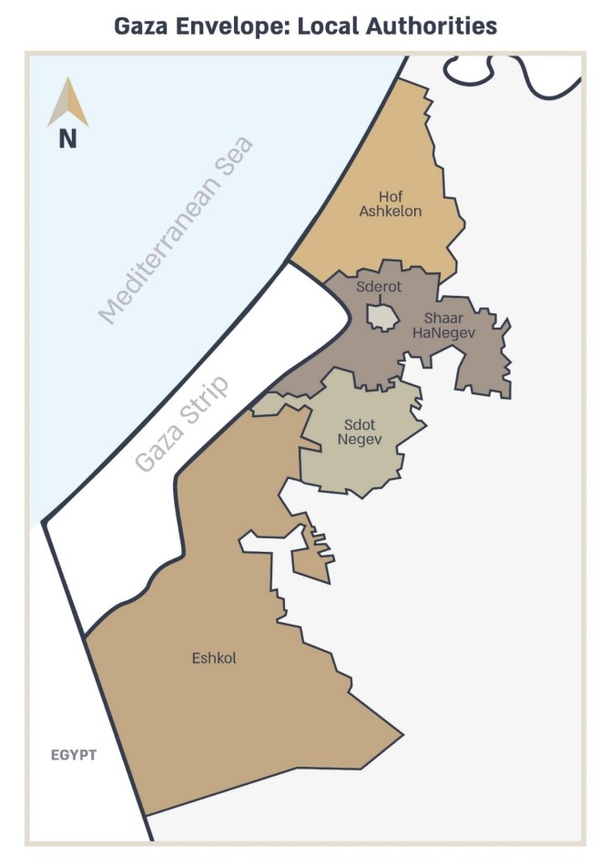

The communities of the Gaza border region that form part of Israel's western border have suffered from continuous security tension, including rocket and missile attacks, for many years. These attacks and nearly constant tension threaten daily routine, span every aspect of life, and necessitate living in a constant state of alert. The region’s residents contend with unimaginable challenges of life under fire alongside a real commitment to life in the region, setting a profound example of modern Zionist commitment. In such a reality, it is vital to develop local leadership that knows how to provide civil and social responses that build community resilience.
The Gaza border region is socially diverse, encompassing both urban and rural settlement of varying socioeconomic status, which are made up of veteran Israelis and new immigrants of different ethnic origins, and religious and secular populations. Despite the difficult reality, in recent years the region has in fact experienced demographic growth and development in the fields of education, employment, community and tourism. Nonetheless, studies on the impact of growing up in Gaza border communities confirm that civilians exhibit PTSD-related symptoms and behaviors. Sderot, the city closest to the border has many NGOs dedicated to helping people of all ages cope with these challenges. These organizations focus mainly on therapeutic intervention.
Overall residents of the Gaza border communities do manage to cope, although the difficult conditions create unique challenges for economic and community life. A recent example is the Darom Adom (Red South) Festival, an annual event that spans several weekends in January–March, when the red anemones blossom in the western Negev. The festival provides an organized response to the needs of the many visitors seeking to enjoy the blossoming flowers, as well as to the needs of the service providers and private businesses in the area. The latest round of rocket attacks affected the entrepreneurs and communities of the Gaza border region just as they were preparing for and relying on the influx of tourists during the festival as leverage for economic development.
In response to these needs, in October 2020, the Mandel Center for Leadership in the Negev will launch the Mandel Program for Regional Leadership in the Gaza Border Communities for participants from the western Negev. Led by program director Dr. Rotem Bresler-Gonen and faculty member Dr. Gili Zivan, the program aims to build a cadre of leadership for the Gaza border area from among diverse communities, all of whom strive to lead safe and secure lives. The program will be based on the Center's educational model, which involves joint study of local leaders in a given region. This creates a sense of partnership that crosses municipal boundaries and provides the grounds for cooperative acts of leadership in the future that will benefit all residents of the region.
The specific geographic area for the program participants includes the city of Sderot and the regional councils of Sdot Negev, Eshkol, Hof Ashkelon and Sha’ar HaNegev. The five regional authorities selected consist mainly of rural communities – kibbutzim and moshavim – and were selected based on a systematic locality study conducted towards developing the program as well as a study conducted in dialogue with the heads of these authorities, who all acknowledge the importance of conducting this leadership program.
As part of its preparations for the program, the Mandel Center for Leadership in the Negev met with key figures in the Gaza border region in order to recruit a large group of talented candidates. It is also conducting an in-depth study of the locality, which includes an examination of the local challenges, review of work currently being done in this area and understanding the implications of the extreme transitions from emergency to routine in daily life in diverse fields: education, community, local development, tourism, and civil entities that deal with the safety of the communities.
The target audience for this program is similar to those of the Center's other regional leadership programs, and includes educational and social leadership, as well as leaders in tourism, economic initiatives and other fields that are relevant to the unique characteristics of the region. Acceptance to the program will follow a rigorous admissions process, currently underway, which is designed to build an excellent and diverse cohort of 20 fellows who will be empowered to enhance their social, educational and community actions in the region.
The Mandel Center for Leadership in the Negev hopes that this dedicated program for leadership in the Gaza border region will empower the leaders of this region, which is of great social and Zionist value, and will expand the Center's impact in the region and throughout the Negev.

{kind=link}